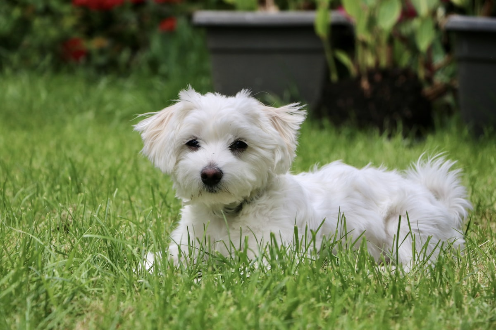

말티즈 수명 13.1년의 근거와 키우기 가이드 — 국내 진료기록 1위 품종의 질병·관리법

말티즈 수명은 영국 58만 마리 코호트(McMillan 2024)에 들어간 말티즈 2,064마리의 중앙값이 13.1년(95% CI 12.6~13.5)입니다. 같은 자료의 믹스견 중앙값은 12.0년이지만 둘의 사망 위험 차이는 통계적으로 유의하지 않았고, 영국 기준 수치입니다. 국내에는 말티즈만 따로 센 수명 자료가 아직 없습니다. 대신 국내 동물병원 진료기록 세 편에서 말티즈는 모두 방문 비중 1위(가장 최근 자료 23.8%)였고, 병원에 온 이유는 슬개골보다 귀와 피부가 앞섰습니다. 눈처럼 새하얀 털과 애교 넘치는 성격으로 사랑받지만, 흰 털·작은 체구 때문에 눈물자국과 슬개골 관리에도 신경 써야 하는 품종입니다. 성격, 수명의 근거, 국내 데이터로 본 질병, 관리법을 정리했습니다.
한눈에 보는 말티즈
| 크기 | 초소형견 (AKC 표준 체중 7파운드 미만·4~6파운드 선호, 약 1.8~3.2kg) |
|---|---|
| 수명 | 영국 자료 중앙값 13.1년 (95% CI 12.6~13.5, McMillan 2024) · 국내 품종별 수치 없음 |
| 털빠짐 | 적음 (AKC 표준상 속털 없는 단일모. 털이 계속 자라 정기 미용 필요) |
| 활동량 | 낮음 (실내 활동 + 짧은 산책으로 충분) |
| 짖음 | 중간 (경계심으로 짖는 편, 교육 필요) |
| 초보자 적합도 | 높음 |
성격과 기질
말티즈는 보호자에 대한 애착이 매우 강한 품종입니다. 사람을 좋아하고 곁에 붙어 있으려 해서 "껌딱지"라는 별명이 붙을 정도입니다. 영리해서 배변훈련이나 기본 예절 교육도 비교적 잘 따라옵니다.
다만 애착이 강한 만큼 분리불안이 오기 쉽습니다. 혼자 있을 때 짖거나 배변 실수를 한다면 분리불안 신호일 수 있어요. 어릴 때부터 "혼자 있어도 괜찮다"를 가르치는 것이 중요합니다. (강아지 분리불안 완화법 참고) 또 경계심이 있어 초인종·낯선 소리에 짖는 편이라, 짖음 교육도 일찍 시작하면 좋습니다.
입양 전 현실 체크 (비용·시간·주거)
"작으니까 손이 덜 가겠지"라는 기대가 말티즈에서 가장 자주 깨집니다. 체구가 작아 사료값은 적게 들지만, 털이 평생 자라는 품종이라 미용비가 고정 지출로 붙습니다. 아래는 체중 3kg 성견 기준의 감각적인 수치이며, 지역과 병원·미용실에 따라 차이가 큽니다.
| 항목 | 월 예상 | 메모 |
|---|---|---|
| 사료 | 2~3만 원 | 하루 55~80g 수준(사료 열량과 중성화 여부에 따라 달라집니다) |
| 미용 | 3~8만 원 | 4~6주마다 4~8만 원을 월로 나눈 값 |
| 병원·예방 | 3~4만 원 | 접종·심장사상충·연 1회 검진의 월 환산 |
| 패드·간식·소모품 | 2~3만 원 | 실내 배변을 한다면 패드 소모가 꾸준합니다 |
| 합계 | 10~18만 원 | 펫보험을 든다면 월 3~5만 원 추가 |
첫해에는 여기에 기초 접종과 중성화(성별·병원에 따라 대략 20~60만 원)가 한 번에 몰립니다. 또 나이가 들어 치과 처치나 무릎 수술이 필요해지면 한 번에 수백만 원이 나가는 구조라, 펫보험 또는 비상 자금을 미리 잡아두는 편이 마음이 편합니다.
하루에 들어가는 돌봄 시간
빗질 5~10분, 눈가 닦기 아침저녁 각 1~2분, 산책 20~30분, 놀이 10~15분, 양치 2~3분. 합치면 하루 한 시간 남짓입니다. 이 중 빗질과 눈가 관리는 하루 건너뛰면 바로 표가 나는 항목이라 "주말에 몰아서"가 통하지 않는다는 점이 이 품종의 특징이에요.
원룸·아파트에서 키울 수 있을까
활동량이 많지 않아 좁은 집에서도 스트레스가 적습니다. 다만 원룸에서 걸리는 건 넓이가 아니라 바닥과 소리입니다. 강마루나 타일은 발이 미끄러져 무릎에 좋지 않으니 주 동선에 매트가 필요하고, 복도 발소리와 초인종에 반응하는 성향이라 벽이 얇은 건물이라면 짖음 교육을 입양 첫 주부터 시작해야 합니다. 반대로 마당이나 넓은 거실은 필수 조건이 아닙니다.
혼자 두는 시간에 대한 내성
애착이 강한 만큼 이 부분이 약합니다. 성견 기준 하루 6~8시간 정도가 현실적인 상한선이고, 자견은 3~4시간마다 배변과 급여가 필요합니다. 야근이 잦거나 12시간씩 집을 비우는 생활이라면 산책 도우미·돌봄 서비스를 비용 계획에 함께 넣어야 합니다.
주의해야 할 질병
- 외이염·피부 질환 — 국내 16개 병원의 말티즈 진료기록 21,355건 (KJVR 2023)에서 피부 질환군이 14.0%(95% CI 13.57~14.50)로 1위, 귀 질환군이 12.2%(11.73~12.60)로 2위였습니다. 개별 방문 사유로 쪼개면 외이염이 9.9%로 가장 많았고 피부염·습진이 7.7%로 뒤를 이었습니다. 서울·전주 11개 병원 자료 (PeerJ 2018)에서도 예방 목적 방문(10.3%)을 빼면 외이염 8.8%, 피부염·습진 6.9%가 맨 위였고 말라세지아 감염이 3.4%로 7위였습니다. 이 논문은 외이염이 말티즈·푸들·시츄·요크셔테리어에서 더 자주 관찰됐다며, 귀 안팎에 털이 많은 장모종의 품종 특성과 관련이 있을 수 있다고 적었습니다. (강아지 외이염 신호)
- 슬개골 탈구 — 미끄러운 바닥과 점프가 무릎에 부담을 줍니다. 다만 진료기록에서 차지하는 몫은 생각보다 작습니다. PeerJ 2018에서 슬개골 탈구는 말티즈 방문 사유의 1.9%(95% CI 1.5~2.4)로 13위였고, 다리를 저는 증상(파행)이 3.5%로 6위였습니다. 국내 103개 병원 자료 (Frontiers 2026)에서 순종견은 믹스견보다 슬개골 탈구 진단 교차비가 1.54배(95% CI 1.38~1.71)였는데, 이는 순종 전체의 값이고 말티즈만의 수치는 아닙니다. (슬개골 탈구 단계별 대처)
- 눈물자국(유루증) — 흰 털이라 착색이 특히 도드라집니다. 눈물관 이상, 눈 주변 털 자극, 알레르기, 식이 등 원인이 다양해 원인부터 찾아야 합니다. 국내 진료기록 논문에는 눈물자국이 독립된 항목으로 잡히지 않고, PeerJ 2018의 말티즈 상위 20개 사유 중 눈과 관련된 것은 결막염 1.7%(15위) 하나였습니다.
- 심장 질환 — KJVR 2023에서 9~13세 말티즈의 심장 질환 기록은 5.8%(95% CI 5.53~6.15)로 3세 이하보다 눈에 띄게 많았습니다. Frontiers 2026에서 순종견의 점액종성 승모판 변성 교차비는 믹스견의 1.57배였습니다(역시 순종 전체 값).
- 동맥관 개존증(PDA) — 태어날 때 닫혀야 할 혈관이 열린 채 남는 선천성 심장병입니다. 영국 UFAW는 말티즈의 PDA 위험이 개 평균의 9배로 추정된다고 쓰면서도, 품종 안에서 몇 %가 앓는지는 자료가 없다고 밝혔습니다. 암컷이 수컷보다 약 3배 많고, 어린 개에게서 들리는 연속성 '기계음' 심잡음이 거의 이 병의 특징이어서 첫 예방접종이나 검진 때 발견되는 일이 흔하다고 합니다 (UFAW). 심부전이 오기 전 어린 나이에 수술하면 완치가 가능하다는 설명도 같은 자료에 있습니다.
- 치주 질환 — PeerJ 2018에서 치은염은 말티즈 방문 사유의 1.5%로 19위였습니다. 비중은 작아도 양치로 보호자가 직접 줄일 수 있는 몇 안 되는 항목이니 어릴 때부터 양치 습관을 들이세요.
- 저혈당 — 몸집이 아주 작은 자견은 끼니를 거르면 저혈당이 올 수 있습니다. 이번에 확인한 국내·영국 자료에는 말티즈 저혈당 수치가 따로 없어 비율은 적지 않았습니다.
무릎·심장 쪽은 보험 약관에서 대기 기간이나 면책이 걸려 있는 항목이기도 합니다. 펫보험 가입 시 슬개골 보장 여부와 함께, 아래 국내 데이터 섹션의 약관 항목을 확인해두면 도움이 됩니다.
국내 진료 데이터로 본 말티즈 — 1위 품종의 나이·질환·수명·보험
말티즈는 국내 동물병원 논문에서 표본이 가장 큰 품종입니다. 다만 아래 비중은 병원을 찾은 개 가운데 말티즈가 차지한 몫이지, 전국에서 기르는 마릿수 순위가 아닙니다. 자주 아픈 품종, 보호자가 병원을 자주 찾는 품종일수록 크게 잡히는 숫자라는 점을 먼저 깔고 읽어야 합니다.
진료기록 세 편 모두에서 1위
2016~2024년 국내 103개 1차 동물병원 28,812마리를 분석한 Frontiers 2026 자료에서 말티즈는 23.8%(6,864마리)로 가장 많았고, 푸들 15.4%, 포메라니안 11.3%, 믹스견 9.5%가 뒤를 이었습니다. 2016년 한 해 서울·전주 11개 병원 11,085마리를 본 PeerJ 2018에서는 25.2%, 2015~2017년 16개 병원 진료기록 192,717건을 모은 KJVR 2023에서는 26.2%(50,477건)였습니다. 병원 표본이 서로 달라 "줄고 있다"고 단정할 수는 없고, 세 자료 모두 넷 중 하나꼴이라는 점이 일관됩니다. 병원 기록이 아닌 설문으로는 한국펫사료협회 2017년 조사가 있는데, 여기서도 말티즈가 21.2%로 1위였습니다(PeerJ 2018에서 인용). 이 조사는 서울과 6개 광역시를 대상으로 한 온라인 설문이어서 대도시 밖의 사정은 담겨 있지 않습니다.
병원에 오는 말티즈는 젊은 쪽이 많다
KJVR 2023의 말티즈 기록 21,355건을 나이로 나누면 3세 이하 36.3%, 4~8세 32.2%, 9~13세 22.0%, 14세 이상 9.0%입니다. 같은 논문의 시츄는 9세 이상이 58.1%였는데 말티즈는 31.0%에 그칩니다. 시츄보다 젊은 개체가 많이 내원했다는 뜻인데, 최근 입양이 많아서인지 노령 개체의 내원이 적어서인지는 이 자료로 가릴 수 없습니다. 논문 표 1의 평균 내원 횟수는 2.36회였고 나이가 들수록 늘어 14세 이상은 4.04회였습니다. 논문은 품종과 나이대 구성이 한쪽으로 쏠려 있어 질병 비율을 조심해서 해석하라고 직접 적어두었습니다.
나이대별로 병원에 온 이유
| 나이 | 기록에 많이 잡힌 사유 (KJVR 2023, 말티즈 21,355건) |
|---|---|
| 3세 이하 | 외이염 10.7% (1위) · 예방접종 10.6% (신뢰구간 겹침) |
| 4~8세 | 외이염 12.2% · 피부염·습진 9.74% |
| 9~13세 | 피부 질환군이 1위, 소화기 질환군 10.3%가 2위 — 심장 질환 5.8%, 재채기·기침 3.7%, 호흡기 질환 3.1%, 유선 종양 2.1%, 종양(미분류) 2.0%, 신장 질환 1.2%가 3세 이하보다 늘어남 |
| 14세 이상 | 재채기·기침 4.3% · 호흡기 질환 3.6% · 파행 3.2% · 신장 질환 2.3% (논문 초록은 세 품종 공통으로 이 나이대의 주된 문제를 심장 질환과 재채기·기침으로 요약) |
세 살 이전의 개별 방문 사유 1위가 예방접종이 아니라 외이염으로 적힌 품종은 세 품종 중 말티즈뿐입니다. 같은 논문에서 미니어처 푸들과 시츄는 이 나이대 1위가 예방접종이었습니다. 다만 말티즈의 두 수치는 0.1%포인트 차이에 95% 신뢰구간(외이염 10.27~11.10, 예방접종 10.18~11.01)이 겹치고, 질환군으로 묶으면 논문 초록은 3세 이하의 가장 흔한 방문 원인을 '예방 의학'으로 요약합니다. 외이염이 예방접종만큼 흔하다고 읽는 편이 정확하고, 귀 관리는 노령기 숙제가 아니라 입양 첫해부터의 숙제라는 뜻입니다.
영어권 자료와 다른 점
영국 UFAW의 유전성 복지 문제 목록에서 말티즈 항목에 올라 있는 질환은 동맥관 개존증(PDA) 하나입니다 (UFAW 말티즈 페이지). 이 목록은 아직 작성 중이라고 페이지에 적혀 있어, 하나뿐이라는 것이 말티즈의 유전 질환이 하나라는 뜻은 아닙니다. 반면 국내 진료기록에서 말티즈가 병원에 오는 이유의 맨 위는 귀와 피부이고, PDA는 상위 목록에 보이지 않습니다. 둘은 서로 모순이 아닙니다. UFAW는 "유전되어 복지를 해치는 병"을, 국내 논문은 "병원 문을 연 횟수"를 셉니다. PeerJ 2018은 피부 질환, 특히 알레르기·아토피 피부염은 유전보다 환경 요인이 원인으로 의심된다고 적었고, 말티즈 같은 장모종은 초기 피부병을 알아차리기 어려우며 가벼운 사례는 1차 병원에서 진단명 없이 대증 치료로 넘어가 실제보다 적게 잡혔을 수 있다고도 했습니다. Frontiers 2026에서 순종견의 교차비가 가장 높았던 진단은 뇌수막염(2.77배, 95% CI 1.17~6.57)이었지만, 이것도 순종 전체의 값이어서 말티즈가 그 수치에 얼마나 기여했는지는 논문에서 알 수 없습니다.
국내 수명 자료에는 말티즈 항목이 없다
서울 6개 동물병원의 2004~2022년 사망기록 개 2,024마리를 분석한 Frontiers 2025 논문은 품종별 수명을 내지 않았습니다. 나와 있는 것은 순종견 전체의 중앙 생존 기간 3,743일(약 10.2년)과 믹스견 4,748일(약 13.0년), 그리고 출생 시 기대수명 9.39년입니다. 표본의 90%가 순종이고 국내 순종의 큰 몫이 말티즈이니 무관한 숫자는 아니지만, 이것을 말티즈 수명으로 옮겨 적으면 안 됩니다. 병원에서 사망일이 기록된 개체만 센 자료라 지금 살아 있는 장수견이 빠져 낮게 나오고, 논문 스스로도 건강하지 않은 동물이 과대표집됐을 수 있다고 한계를 적었습니다.
그래서 품종 수명은 영국 자료에 기댈 수밖에 없습니다. McMillan 2024의 말티즈 표본은 2,064마리(그중 사망 확인 666마리)이고 중앙 수명 13.1년은 요크셔테리어 13.3년보다 짧고 시츄 12.8년, 비숑 프리제 12.5년, 포메라니안 12.2년, 치와와 11.8년보다 깁니다. 다만 믹스견과 견준 사망 위험비는 0.93(95% CI 0.86~1.00, p=0.06)으로 통계적으로 유의한 차이가 아니었습니다. "말티즈가 믹스견보다 확실히 오래 산다"고 말할 근거는 못 된다는 뜻입니다. 영국의 사육 환경과 진료 접근성 기준이라는 점도 감안해야 합니다.
보험 약관에서 말티즈가 걸리는 항목
삼성화재 다이렉트 착한펫보험 반려견 약관 (약관 PDF)을 말티즈 보호자 눈으로 읽으면 네 군데가 걸립니다.
- 동맥관 개존증 — 제6조 제2항 제15호의 유전·발달이상 면책 목록 중 "선천성 결손"에 이름이 올라 있습니다. UFAW가 말티즈에서 위험이 높다고 꼽은 바로 그 병입니다. 같은 호에는 대퇴골두 괴사증도 들어 있는데, 말티즈에서 얼마나 흔한지는 이번에 확인한 자료에 수치가 없습니다.
- 누루관 시술 — 제6조 제2항 제14호는 기관협착과 함께 누루관(눈물길) 시술과 관련된 치료비를 보상하지 않습니다. 눈물자국의 원인이 눈물길 막힘이어서 뚫는 시술을 받는 경우가 여기에 해당할 수 있습니다. 어디까지가 "누루관 시술"인지는 약관에 풀이가 없으니 가입 전에 보험사에 물어보세요.
- 무릎 — 제3조는 보험계약일부터 1년 이내에 발생한 슬관절탈구·고관절탈구·슬관절형성부전 등에 보험금을 지급하지 않습니다(재가입·연장 계약은 예외). 약관 용어는 "슬관절탈구"이고, 슬개골 탈구가 여기에 포함되는지는 문구만으로는 확정할 수 없습니다.
- 잔존유치 — 제6조 제2항 제5호가 잔존유치 발치를 건강한 동물에게 하는 외과수술로 분류해 제외합니다. 심장질환은 가입 후 90일이 지나야 보장이 시작됩니다.
같은 제6조의 제1항 제10호는 선천적·유전적 질병을 포괄적으로 제외하되 보험기간 중 처음 발견된 경우는 보상한다는 단서를 달고 있습니다. 다른 보험사 약관은 확인하지 않았습니다.
나이대별 관리 포인트
자견기 (생후 12개월까지)
이 시기에 응급으로 번질 수 있는 것은 저혈당입니다. 몸집이 워낙 작아 한 끼만 걸러도 기운이 빠지고 비틀거릴 수 있습니다. 하루 3~4회로 나눠 먹이고, 잇몸이 창백해지거나 반응이 둔해지면 지체 없이 병원으로 가야 합니다. 동시에 평생 갈 점프 습관이 이때 만들어져요. 소파에 올라가고 싶어 하면 안아서 올려주기보다 반려견 계단을 놓고 쓰는 법을 가르치는 편이 낫습니다. 생후 6~7개월에 유치가 빠지지 않고 이중으로 남아 있다면, 중성화 수술 때 함께 뽑을지 수의사와 상의하세요. 잔존유치 발치는 위에서 본 약관의 보상 제외 항목이라 비용은 따로 잡아둬야 합니다.
빈도로 보면 이 나이대의 주인공은 귀입니다. 국내 기록에서 3세 이하 말티즈의 방문 사유 1위가 외이염(10.7%)이었으니, 귀에서 나는 시큼한 냄새, 갈색 귀지, 머리를 터는 행동을 첫해부터 정기적으로 확인하세요. 또 첫 예방접종 때 청진에서 연속성 심잡음이 들린다는 말을 들었다면, 앞에서 본 동맥관 개존증 때문일 수 있으니 추가 심장 검사가 필요한지 그 자리에서 물어보세요.
성견기 (1~7세)
겉으로 가장 멀쩡해 보여서 방심하기 쉬운 구간입니다. 이때 붙잡아야 할 건 체중과 치아 두 가지예요. 3kg인 아이가 300g 찌면 체중의 10%가 늘어난 셈이라 무릎과 심장에 그대로 부담이 됩니다. 한 달에 한 번, 같은 시간 같은 저울로 재서 적어두면 변화가 눈에 보입니다. 양치는 매일이 목표이고 최소 이틀에 한 번은 해주세요. (강아지 양치 습관 들이는 법) 국내 기록에서 4~8세 말티즈는 외이염 12.2%, 피부염·습진 9.74%로 귀·피부 문제가 가장 두드러지는 나이대이기도 합니다. 목욕 뒤 귀 안쪽과 발가락 사이를 끝까지 말리는 습관을 이 시기에 굳혀두세요.
노령기 (8세 이후)
국내 기록에서 말티즈는 9~13세에 심장 질환 기록이 5.8%로 늘고, 14세 이상에서는 재채기·기침(4.3%)과 호흡기 질환(3.6%), 파행(3.2%), 신장 질환(2.3%)이 앞줄에 섭니다. 집에서 할 수 있는 가장 쓸모 있는 관찰은 잠든 상태에서 1분간 호흡수를 세는 것이에요. 깊이 잠들었는데도 가슴이 오르내리는 횟수가 30회를 꾸준히 넘거나(VCA 동물병원은 안정·수면 시 분당 15~30회를 정상 범위로 봅니다), 마른기침이 늘고 산책 중 자꾸 멈춰 선다면 심장 검진을 받아보시길 권합니다. 8세부터는 6개월~1년 간격으로 혈액검사와 흉부 촬영이 포함된 검진을 받는 것이 조기 발견에 유리합니다.
털 관리와 미용 실전
말티즈 털은 속털이 거의 없는 단일모라 빠지는 양 자체는 적습니다. 문제는 빠진 털이 밖으로 떨어지지 않고 그 자리에 남아 엉킨다는 점이에요. "털 안 빠지는 개"가 오히려 매일 빗어야 하는 개가 되는 이유입니다.
도구와 빗질 방법
슬리커 브러시와 촘촘한 꼬리빗(콤) 두 개면 충분합니다. 요령은 겉만 훑지 않는 것. 털을 손으로 층층이 갈라 뿌리 쪽부터 빗어 내리는 방식이라야 속에서 자라는 엉킴을 잡을 수 있습니다. 마무리로 콤이 뿌리까지 걸림 없이 지나가면 성공이에요.
특히 잘 엉키는 부위
- 귀 뒤쪽 — 가장 먼저 뭉치는 자리. 며칠만 놓쳐도 판처럼 굳습니다.
- 겨드랑이와 뒷다리 안쪽 — 마찰이 심한 곳. 하네스를 자주 채운다면 매일 확인하세요.
- 턱 밑과 가슴 — 물그릇에 젖었다 마르기를 반복하는 부위입니다.
- 항문 주변과 꼬리 밑동 — 위생 문제로 바로 이어집니다.
목욕과 미용 주기
목욕은 2~3주에 한 번이면 충분하고, 결과는 횟수보다 말리는 과정에서 갈립니다. 수건으로만 닦고 자연 건조를 시키면 겨드랑이·발가락 사이·귀 안쪽에 습기가 남아 냄새와 피부 트러블로 이어져요. 드라이어 바람을 쐬면서 동시에 빗질을 해야 털이 눌리지 않고 엉킴도 같이 풀립니다. 미용실은 4~6주 간격이 일반적이고 비용은 대략 4~8만 원선인데, 엉킴이 심하면 추가 요금이 붙거나 짧게 미는 것 말고는 방법이 없어집니다.
일상 관리 (식이·운동)
식이 관리
체구가 작아 조금만 과식해도 비만이 되기 쉽습니다. 적정 급여량을 사료 급여량 계산기로 확인하고, 간식은 하루 칼로리의 10% 이내로 제한하세요. 눈물자국이 심하면 사료를 바꿔보는 것도 방법입니다.
운동
실내 활동만으로도 상당한 운동량이 채워지지만, 하루 20~30분 산책은 정신 건강에 좋습니다. 슬개골 보호를 위해 소파·침대 점프는 막고 미끄럼방지 매트를 깔아주세요.
초보 보호자가 자주 하는 실수
- 겉털만 빗고 빗질을 끝냈다고 생각하기 — 슬리커로 표면만 쓸면 손에 닿는 감촉은 부드러운데 속은 이미 뭉쳐 있습니다. 미용실에서 "엉켜서 밀 수밖에 없다"는 말을 듣는 대부분이 여기서 시작돼요. 빗질을 마친 뒤 콤이 뿌리까지 통과하는지 확인하세요.
- 목욕 후 수건만 쓰고 자연 건조 — 흰 털이 누렇게 변하고 쉰내가 나는 흔한 원인입니다. 특히 귀 안쪽에 물기가 남으면 귀 질환으로 번질 수 있으니, 귀를 자주 긁거나 머리를 흔들면 진료를 받아보세요. (강아지 외이염 신호)
- 눈물자국을 사료 탓으로만 돌리기 — 식이가 원인일 때도 있지만 속눈썹이 눈을 찌르거나 눈물길이 막힌 구조적 문제일 수도 있습니다. 사료를 바꿔도 그대로이거나 눈을 자주 찡그리고 앞발로 비빈다면 안과 검진이 먼저입니다.
- 짖을 때 안아서 달래기 — 가볍다 보니 반사적으로 안아 올리게 되는데, 개 입장에서는 "짖으면 안아준다"로 정리됩니다. 짖음이 멎은 뒤 조용한 순간에 관심을 주는 순서로 바꿔야 합니다.
훈련과 사회화 포인트
말티즈는 보호자의 표정과 목소리 톤을 예민하게 읽습니다. 그래서 칭찬과 간식으로 알려주는 방식에 아주 빠르게 반응하는 대신, 큰 소리로 혼내면 겁을 먹고 학습 자체가 멈춰버립니다. 잘 안 될 때는 강도를 높일 게 아니라 난이도를 낮춰야 합니다.
배변 훈련은 길게 보기
방광이 작아 자견기에는 참는 시간 자체가 짧습니다. 실수를 혼내면 "보호자 앞에서 싸면 안 된다"로 잘못 배워 소파 뒤나 구석에 숨어서 하게 돼요. 성공했을 때 바로 칭찬하는 쪽으로만 밀고 가는 편이 결국 빠릅니다. (배변 훈련 단계별 방법)
혼자 있기 연습
이 품종 훈련에서 가장 중요한 항목입니다. 나가는 시늉만 하고 30초 뒤 돌아오기부터 시작해 5분, 15분, 30분으로 늘려가고, 나갈 때와 들어올 때 인사를 크게 하지 않는 것이 요령이에요. 열쇠 소리나 신발 신는 동작을 평소에도 의미 없이 반복해두면 "출발 신호"에 붙은 긴장이 옅어집니다.
만지는 것에 익숙해지기
평생 4~6주마다 미용실에 가고 매일 눈가와 발을 만져야 하는 품종입니다. 자견기부터 발 만지기, 귀 젖히기, 입 열기를 간식과 짝지어 하루 30초씩 연습해두면 성견이 된 뒤 미용도 진료도 훨씬 수월해집니다.
이런 분께 잘 맞아요
- 실내 위주로 생활하며 작은 반려견을 원하는 분
- 매일 빗질·미용 관리에 시간을 낼 수 있는 분
- 집에 함께 있는 시간이 많은 분 (분리불안 예방에 유리)
반대로 장시간 집을 비우는 경우가 많다면, 분리불안 예방을 위한 준비와 훈련이 꼭 필요합니다.
자주 묻는 질문 (FAQ)
Q. 말티즈 수명은 얼마나 되나요?
영국 58만 마리 코호트(McMillan 2024)에서 말티즈 2,064마리의 중앙 수명은 13.1년(95% CI 12.6~13.5)이었습니다. 같은 자료의 믹스견은 12.0년이지만 둘의 사망 위험 차이는 통계적으로 유의하지 않았습니다. 국내에는 말티즈만 따로 계산한 수명 자료가 없고, 서울 사망기록 연구의 순종견 중앙값 3,743일은 병원에서 사망이 확인된 개체만 센 값이라 낮게 나옵니다.
Q. 눈물자국은 없앨 수 있나요?
원인(눈물관 이상, 자극, 알레르기, 식이 등)에 따라 다릅니다. 눈 주변 털 관리와 매일 닦아주기로 완화되며, 지속되면 안과 검진을 받아 원인을 확인하세요.
Q. 짖음이 심한데 어떻게 하나요?
말티즈는 경계심으로 짖는 편입니다. 짖는 상황을 파악하고, 짖지 않을 때 보상하는 방식으로 어릴 때부터 교육하면 개선됩니다. 혼내는 방식은 역효과가 나기 쉽습니다.
Q. 말티즈는 어떤 병으로 병원에 가장 많이 가나요?
국내 16개 동물병원의 말티즈 진료기록 21,355건(KJVR 2023)에서는 피부 질환군 14.0%, 귀 질환군 12.2% 순이었고, 개별 사유로는 외이염이 9.9%로 1위였습니다. 3세 이하에서도 외이염(10.7%)이 예방접종(10.6%)과 비슷한 비중으로 맨 위였는데, 두 수치의 신뢰구간은 겹칩니다. 슬개골 탈구는 서울·전주 11개 병원 자료(PeerJ 2018)에서 방문 사유의 1.9%로 13위였습니다. 병원에 온 개체 기준의 비율이라 전체 말티즈의 발병률과는 다릅니다.
Q. 말티즈에 많다는 동맥관 개존증(PDA)은 펫보험으로 보장되나요?
확인한 삼성화재 다이렉트 착한펫보험 반려견 약관에서는 제6조 제2항 제15호의 유전·발달이상 면책 목록에 동맥관 개존증이 들어 있어 보상에서 제외됩니다. 같은 항 제14호는 누루관 시술 관련 치료비를, 제3조는 가입 1년 이내에 발생한 슬관절탈구를 보상하지 않습니다. 다른 보험사 약관은 확인하지 않았으니 가입 전에 면책 조항을 직접 읽어보세요.